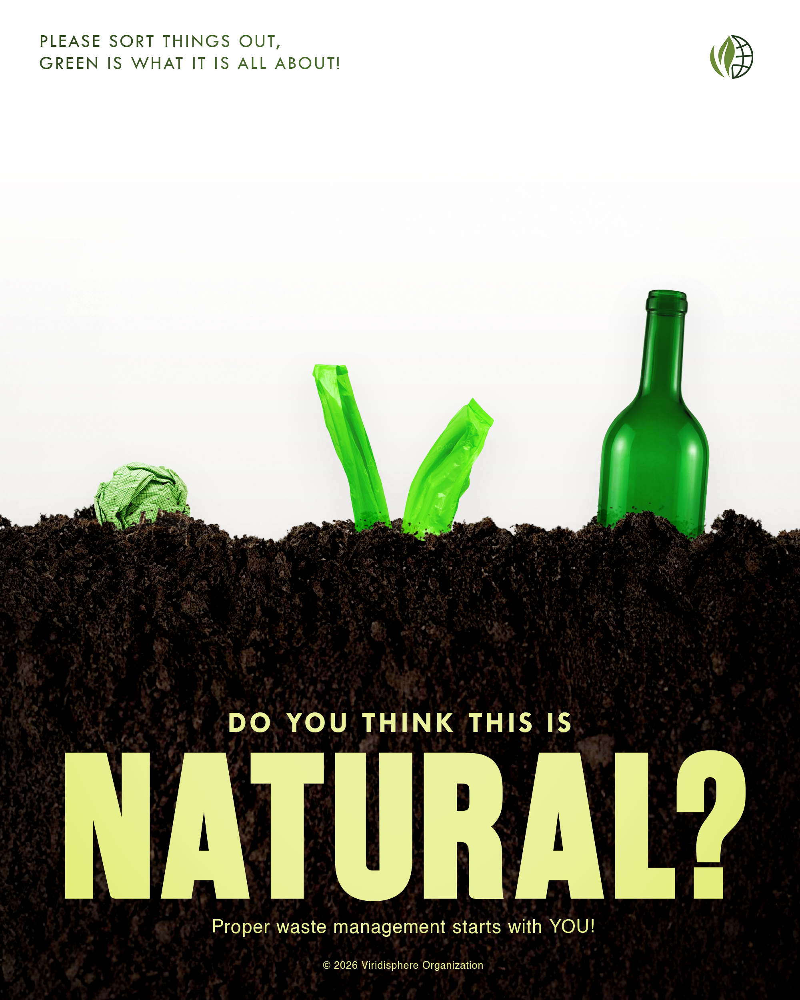

SIGN UP
SIGN UP
SIGN UP
SIGN UP
A platform where students and community members learn how proper waste management helps create a cleaner, healthier, and more sustainable community. The website will serve as an accessible source of information about waste segregation, recycling, reuse, and responsible waste disposal.
Improper waste management represents a critical environmental challenge that severely affects communities, urban streets, and vital waterways throughout the Philippines. Widespread practices such as unorganized waste segregation, deliberate littering, and inadequate disposal infrastructure cause vast quantities of garbage to accumulate in public spaces. This accumulation results in extensive land degradation, air pollution, and water contamination. Furthermore, non-biodegradable waste routinely clogs drainage systems, escalating flood risks during heavy rains and monsoons while posing persistent threats to local biodiversity, marine ecosystems, and public health.
Viridisphere is a community driven advocacy group dedicated to building a cleaner, healthier, and more sustainable environment. We provide accessible educational resources and practical waste management solutions to empower students and community members to take an active role in keeping their surroundings clean and safe.
To achieve this, Viridisphere bridges the gap between environmental awareness and actionable daily habits. We aim to collaborate with environmental organization, local government units, waste management experts, and educational institutions to deliver accurate guidance, practical tools, and engaging multimedia resources. By uniting students, educators, and community members, we foster a shared responsibility for protecting our local government and creating cleaner, safer spaces for everyone. Through community outreach, online campaigns, and practical guides, Viridisphere. works to inspire individuals to take ownership of their waste and actively contribute to a greener ecosystem.
Our website addresses the problem of improper waste disposal by providing a clear, easy to use guide on proper waste management. Its main objective is empower students and community members with practical knowledge about waste segregation, recycling, reuse, and reduction inspiring long term habits that lead to a cleaner and more sustainable environment.
Beyond sharing basic information, our purpose is to drive meaningful, long term behavioral change. By offering actionable tips, step by step guides, and clear insights into the impacts of waste, we aim to eliminate confusion around disposal practices and inspire community wide shift toward sustainability. We empower individuals to realize that every small effort from properly sorting a single piece of trash to reducing single use items contributes directly to a healthier ecosystem and cleaner future. Ultimately, this site acts as a bridge between awareness and real world action, turning passive learners into active eco-advocates within their respective communities.

Email address:
viridisphere.org@gmail.com
Phone Number:
0948 452 1737
Help build cleaner, healthier communities through practical environmental action.
JOIN VIRIDISPHERE Explore
Explore